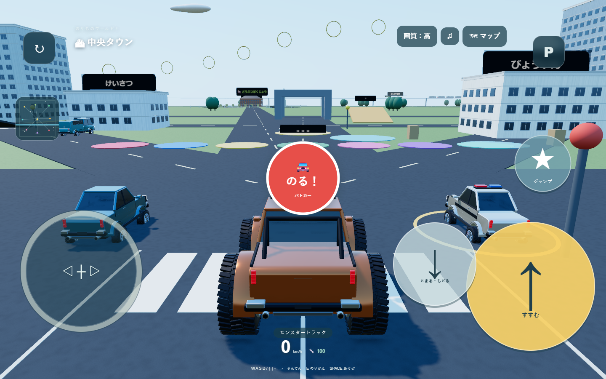

どんなゲーム？
車、パトカー、消防車、工事車両、飛行機、ヘリなどから好きな乗り物を選び、2km四方の3Dワールドを自由に走れます。中央の街、空港、港、レース場、巨大な遊び場、山道などへマップから移動できます。
決められたゴールやゲームオーバーはありません。道路を走る、ジャンプ台で飛ぶ、別の乗り物へ乗り換えるなど、子どものペースで遊べる内容です。
4歳でも遊びやすい操作
スマホでは横画面にして、左の大きな十字キーで進む方向を決めます。右の黄色いボタンで前進し、星のボタンが出る乗り物ではサイレンや作業アームなどを動かせます。
| 進む・曲がる | スマホは左の十字キーと右の黄色い「すすむ」ボタン。PCはWASDまたは矢印キー。 |
|---|---|
| ジャンプ | スマホは右のジャンプボタン。PCはスペースキー。 |
| 乗り換え | 近くの乗り物で赤い「のる！」を押すか、乗り物一覧から選びます。PCはEキーまたはVキー。 |
| 迷ったとき | マップから行きたい場所へ移動できます。左上の戻るボタンで乗り物を道路へ戻せます。 |
乗れるもの・遊べる場所
スポーツカー、モンスタートラック、救急車、パトカー、消防車、ショベルカー、飛行機、ヘリなど20台を用意しています。街にはジャンプ台、トランポリン、ボウリング、サッカー、洗車場、踏切、動く電車と新幹線などがあります。
保護者の方へ
登録、課金、チャット機能はありません。乗り物の選択や画質、音量などの設定は同じ端末のブラウザ内へ保存されます。初回は大人の方が横画面への切り替えと画質設定を手伝ってください。動きが重い場合は、右上の画質ボタンを「軽量」にすると遊びやすくなります。
制作について
乗り物、建物、遊具、効果音はプログラムで制作したオリジナルです。分かりやすい大きな操作ボタンと、自由に試せる世界を重視して作っています。